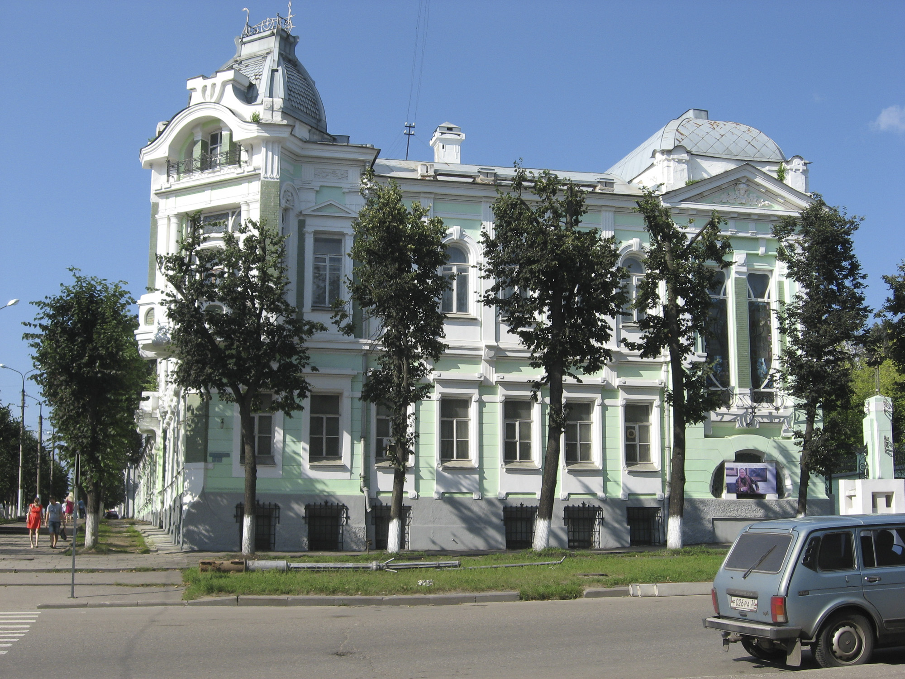
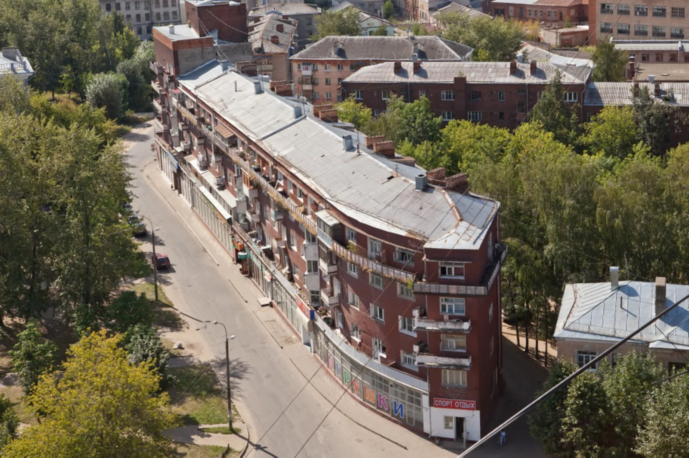
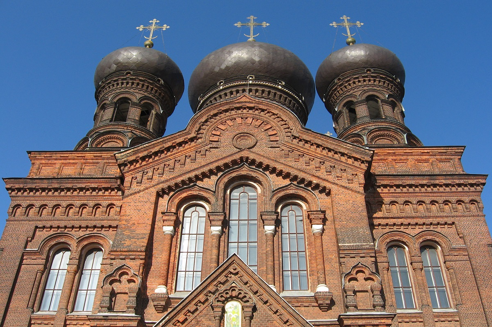

Иваново
Иваново — город невест и центр текстильной промышленности. После реконструкции здесь открылся знаменитый Ивановский цирк, что также добавляет городу туристической привлекательности. Для всех, кто планирует посетить «ситцевый край», реально или виртуально, мы подготовили гид по его важнейшим достопримечательностям.

Конечно, нельзя, будучи в Иваново, не зайти в этот музей. В основу его экспозиции легла уникальная текстильная коллекция, насчитывающая полмиллиона единиц. Музей расположился в родовом доме Дмитрия Бурылина, построенном в начале XX века в стиле модерн. Кроме ивановских ситцев в музее представлена экспозиция «Слава Зайцев. Жизнь = творчество». Кстати сказать, всемирно известный модельер родился в Иваново, здесь же закончил текстильный техникум и начал свой творческий путь.

Как писал Владимир Маяковский в двадцатые годы:
«Москва и
Иваново… строились наново». Образец советского конструктивизма,
этот дом является неотъемлемым символом Иваново. Жилой дом для
рабочих архитектор Фридман превратил в плывущее судно. Один из
торцов выполнен в форме носа корабля, а на «корме» — смотровая
башня.

Церковь Введения в Иваново называют также Красной церковью. Комплекс начал строиться в 1900 году на участке, пожертвованном графом Шереметевым, на средства ивановских фабрикантов Бурылиных, Гарелиных, Битовой, Маракушева и др. Комплекс отличается единством архитектуры, выдержанной в русском стиле, с отдельными элементами модерна. Крупнейший ансамбль нач. 20 в. играющий важную градостроительную роль.
